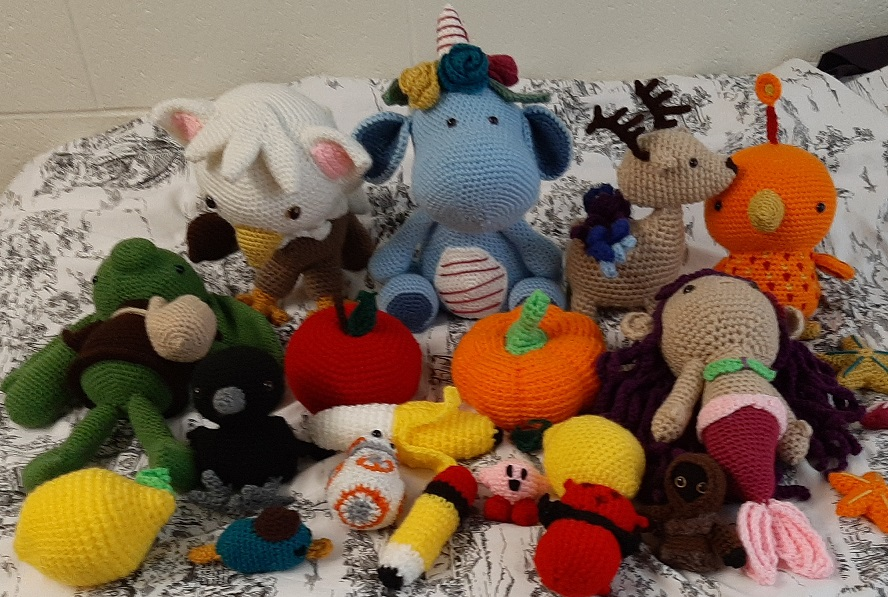

I started crocheting back in October of 2021 when I joined Crafty BYU, a BYU craft club with different monthly activities. Their October craft was crochet, so I decided to learn how to do that. This has since become a deep hobby of mine, and I've since then completed 30 projects in the space of 6 or 7 months. This included Christmas gifts for my family members and a couple of baby hats, which I was really proud of. I typically do dolls (often called amigurumi) of mythical creatures, popular characters, and anything else that catches my eye.
Here's a picture of some of the things I've made since I started.
How to Start
People often first get interested in crochet when they find books with crochet patterns. These patterns are the template for a project, be it a hat, a potholder, or a toy. These patterns are composed of various stitches in a very particular order that help to shape the project. It can often be difficult to learn how to crochet if you don't know how to do the stitches. Most crochet books have descriptions of how to do the relevant stitches, but these explainations aren't always satisfactory. Google and Youtube are excellent sources for learning how to do certain stitches, because pictures and videos can instruct visually in a way that words alone lack.
You can also find many crochet patterns online. Books can be bought online, or at various craft stores. You can find individual patterns online at locations such as Etsy (if you're okay with paying for patterns), Ravelry for free patterns (though you have to make an account to use this website), and Pinterest. Googling designs you want to do has also worked well for me. There's also YouTube videos on how to do various patterns.
Yarn can be bought at various craft stores, in a variety of colors, weights or thicknesses, and textures. Crochet hooks can also be bought in a variety of sizes, which larger sizes making your project larger. Yarn needles, larger needles made for sewing yarn instead of thread, are also really helpful. Some dolls require eyes, usually referred to as safety eyes. These can be bought in the dollmaking section of a craft store in different sizes and colors, or you can just sew yarn over that section to make the eyes. Ultimately, the sky's the limit for any project you want to do.